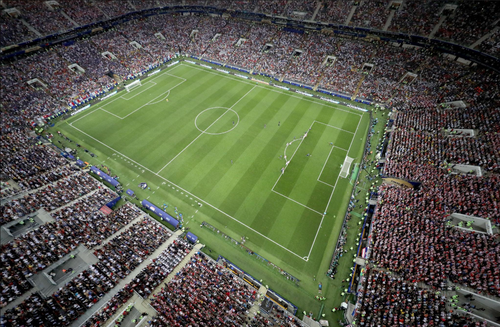
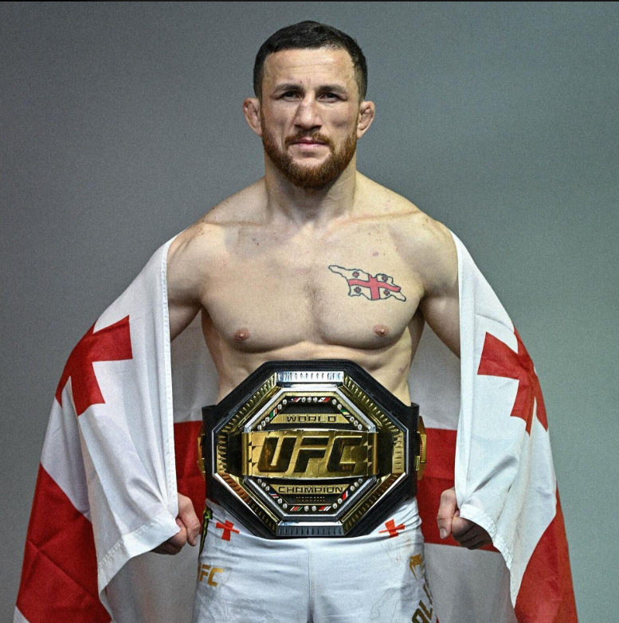
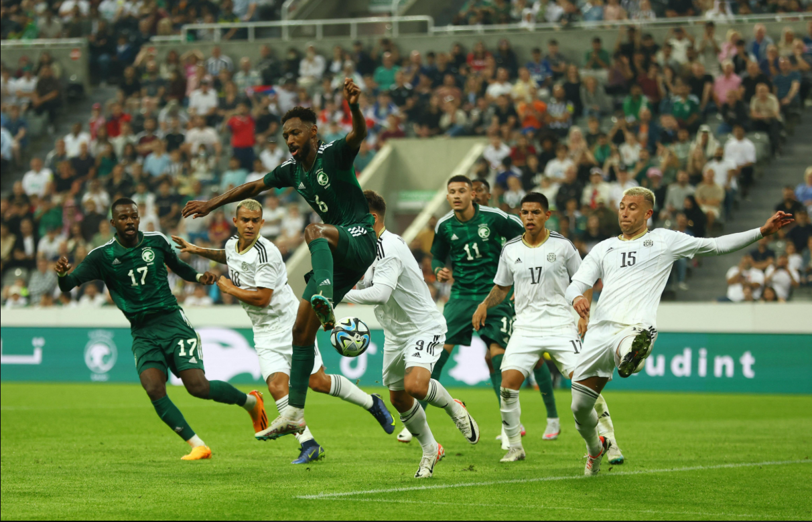
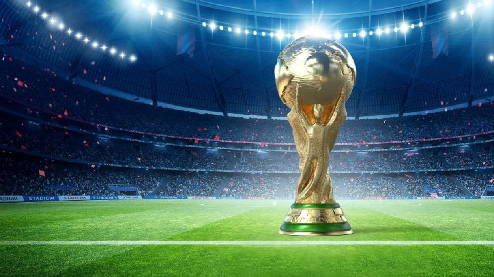

გზა, რომელიც მსოფლიოს აერთიანებს
სპორტი საზღვრებს მიღმა
სპორტი — საერთო ენა მთელი მსოფლიოსთვის
სპორტი ადამიანებს ერთმანეთთან აკავშირებს მიუხედავად მათი ეროვნებისა, ენისა თუ კულტურისა. ის მხოლოდ შეჯიბრება და გამარჯვება არ არის — სპორტი გუნდურობის, დისციპლინის, მიზანდასახულობისა და ურთიერთპატივისცემის გამოხატულებაა.
სხვადასხვა ქვეყანაში სპორტის განსხვავებული სახეობებია პოპულარული, თუმცა მათი მთავარი მიზანი საერთოა: ადამიანების გაერთიანება და ჯანსაღი კონკურენციის განვითარება.

შერეული ორთაბრძოლები და ახალი თაობის სპორტი
თანამედროვე სპორტში განსაკუთრებული ადგილი უკავია შერეულ ორთაბრძოლებს (MMA). ეს სპორტის სახეობა სხვადასხვა საბრძოლო დისციპლინის ელემენტებს აერთიანებს და სპორტსმენებისგან დიდ მომზადებას, ტექნიკასა და გამძლეობას მოითხოვს.
ბოლო წლებში MMA-მ საერთაშორისო მასშტაბით დიდი პოპულარობა მოიპოვა. მისი შეჯიბრებები მილიონობით მაყურებლის ყურადღებას იპყრობს და სხვადასხვა ქვეყნის სპორტსმენებს მსოფლიო ასპარეზზე თავის წარმოჩენის შესაძლებლობას აძლევს.

მერაბ დვალიშვილი — საქართველოს სახელი მსოფლიო არენაზე
მერაბ დვალიშვილი ქართველი შერეული ორთაბრძოლების სპორტსმენია, რომელმაც საერთაშორისო სპორტულ სამყაროში მნიშვნელოვანი აღიარება მოიპოვა. მისი კარიერა მიზანდასახულობისა და შრომისმოყვარეობის მაგალითია.
დვალიშვილის წარმატებამ საქართველოს სახელი კიდევ უფრო გააცნო საერთაშორისო აუდიტორიას. მისი გამოსვლები ქართველი გულშემატკივრებისთვის განსაკუთრებული ინტერესის საგანია.

ფეხბურთი — სპორტი, რომელიც მსოფლიოს აერთიანებს
ფეხბურთი მსოფლიოში ერთ-ერთი ყველაზე პოპულარული სპორტია. მას მილიონობით ადამიანი თამაშობს და გულშემატკივრობს. ფეხბურთი სხვადასხვა კულტურისა და ქვეყნის ადამიანებს საერთო ინტერესის გარშემო აერთიანებს.
მსოფლიო ჩემპიონატი კი სპორტული სამყაროს ერთ-ერთი უმნიშვნელოვანესი მოვლენაა. ამ ტურნირზე ქვეყნების ნაკრებები ერთმანეთს ეჯიბრებიან და საკუთარი ქვეყნის სახელით გამოდიან.

სპორტის მომავალი
ტექნოლოგიურმა განვითარებამ სპორტზეც მნიშვნელოვანი გავლენა მოახდინა. თანამედროვე სტადიონები, სპორტსმენების მომზადების ახალი მეთოდები და ვიდეოგამეორების სისტემები შეჯიბრებებს უფრო საინტერესო და ორგანიზებულს ხდის.
მომავალში სპორტის განვითარებაში კიდევ უფრო დიდ როლს ითამაშებს ტექნოლოგია, საერთაშორისო თანამშრომლობა და ახალგაზრდების ჩართულობა. სპორტი კვლავ დარჩება სივრცედ, სადაც ადამიანები საერთო მიზნებითა და ემოციებით ერთიანდებიან.
